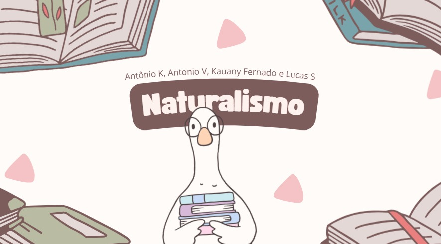
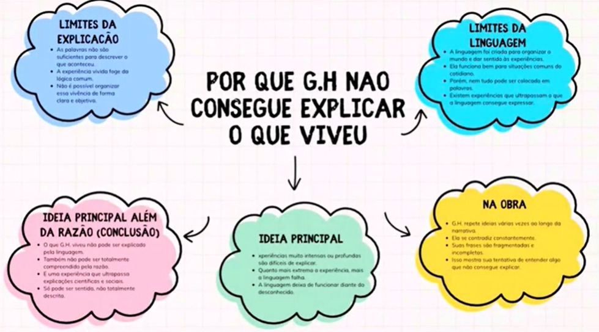
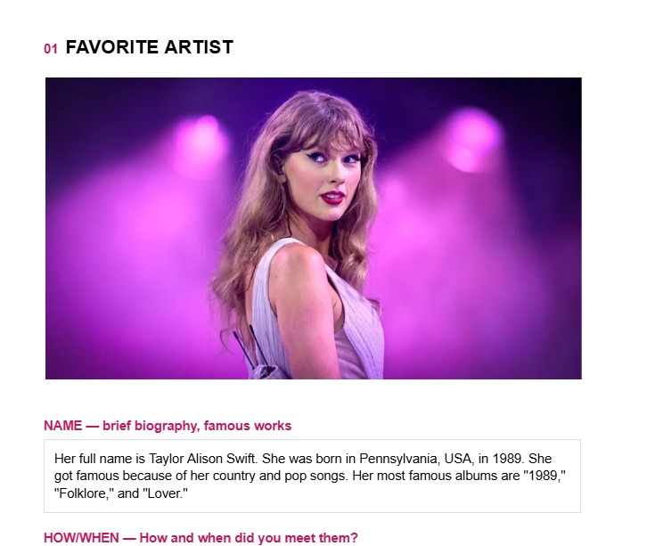
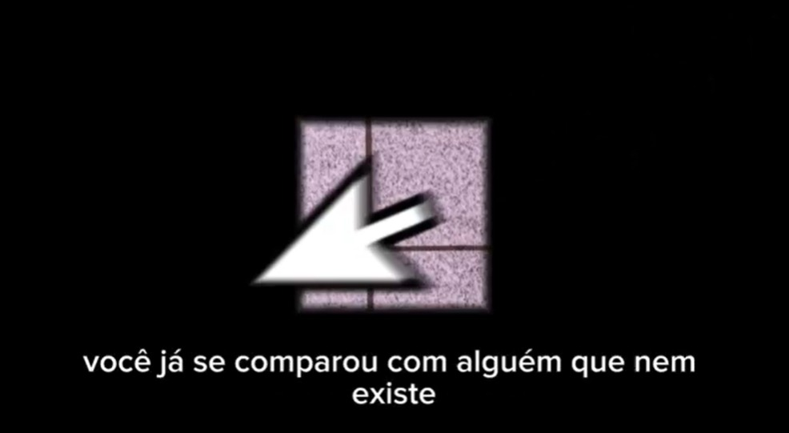
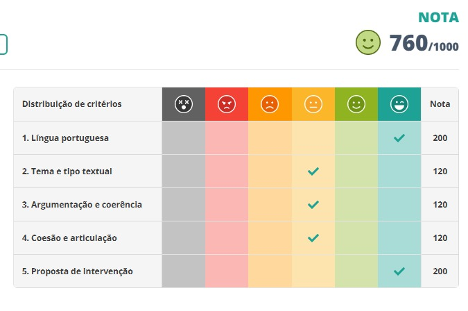
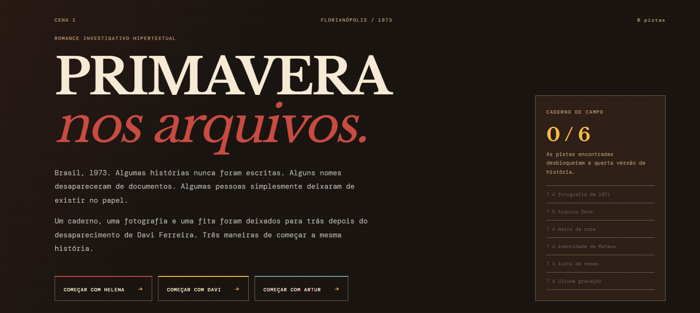
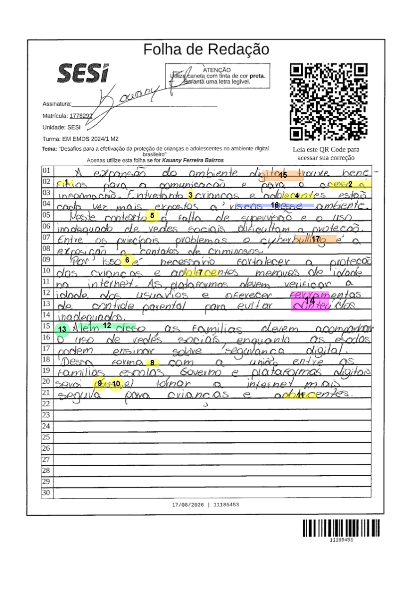
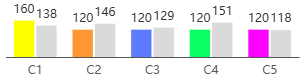

Primeiro Trimestre

Game Literário
Nesta atividade, desenvolvemos um jogo literário com o objetivo de explorar os conteúdos estudados em sala de aula de uma maneira criativa e interativa. A proposta permitiu trabalhar a interpretação, a leitura e o conhecimento das obras literárias, além de estimular a criatividade e o trabalho em equipe.
H15 - Produzir trabalhos individuais e coletivos, explorando materiais e técnicas ligados ao universo das composições artísticas e de práticas corporais.

A Paixão de G.H.
Nesta atividade, realizamos uma análise da obra A Paixão de G.H., de Clarice Lispector, buscando compreender os principais acontecimentos, reflexões e características da narrativa. A leitura possibilitou desenvolver a interpretação textual e refletir sobre os sentidos presentes na obra, relacionando os elementos literários com as questões abordadas pela autora.
H4 - Analisar textos e discursos, considerando os contextos de produção, circulação e recepção.
H22 - Produzir textos técnicos de acordo com uma estrutura estabelecida.
Segundo Trimestre

English Activity
Nesta atividade, escrevi em inglês sobre meu artista, filme e música favoritos. Aprendi novas palavras, pratiquei o uso do Simple Past e desenvolvi minha escrita em inglês. A atividade foi interessante porque permitiu relacionar o conteúdo da disciplina com meus gostos pessoais. Gostei de pesquisar e aprender mais sobre obras e artistas que admiro.
H25 - Interpretar textos em Língua Estrangeira Moderna (Inglês).

Videomanifesto
Estudamos o gênero manifesto a partir das obras modernistas de Oswald de Andrade para compreender sua linguagem crítica e provocativa. Na prática, produzimos um manifesto em vídeo abordando a pressão estética nas redes sociais. A atividade desenvolveu nosso pensamento crítico, a argumentação e a criatividade ao conectar o Modernismo a questões atuais.
H3 - Identificar o tema principal, os subtemas e finalidades dos textos.
H24 - Produzir textos escritos de domínio acadêmico e educacional.

Red1000
Participei da redação online pela plataforma Red1000, seguindo todas as orientações. Escrevi uma dissertação sobre os perigos do autodiagnóstico de transtornos mentais nas redes sociais no Brasil e depois transcrevemos para o digital.
H22 - Produzir textos técnicos de acordo com uma estrutura estabelecida.
Terceiro Trimestre

Narrativas Hiperlinks - Secos e Molhados
Primavera nos Arquivos é uma webnarrativa investigativa e hipertextual inspirada no álbum dos Secos & Molhados (1973). Ambientada no Brasil ditatorial, a trama utiliza canções da MPB como códigos narrativos em um mistério sobre censura e identidades apagadas. Responsável pelo design narrativo completo, elaborei a arquitetura de escolhas, múltiplos pontos de vista e quatro finais alternativos. O projeto integrou roteirização para a web, UX writing e decodificação de pistas visuais e sonoras. Demonstra domínio em storytelling interativo, pesquisa histórica e estruturação de fluxos narrativos complexos.
C3 - Articular aspectos das identidades em textos e manifestações artísticas e culturais, considerando as práticas sociais e as linguagens utilizadas.
H15 - Produzir trabalhos individuais e coletivos, explorando materiais e técnicas ligados ao universo das composições artísticas e de práticas corporais.
Link da análise critica: Acessar projeto


Redações na plataforma Imagine
Elaboração de texto dissertativo-argumentativo no padrão ENEM sobre os "Desafios para a efetivação da proteção de crianças e adolescentes no ambiente digital brasileiro". A produção analisa gargalos como o cyberbullying, a falta de supervisão e os riscos nas redes sociais, propondo ações conjuntas entre família, escola, governo e plataformas digitais para o controle parental e educação cibernética. A atividade demonstra capacidade de síntese de problemas sociais complexos, estruturação argumentativa e bom domínio da modalidade escrita formal da língua portuguesa.
C4 - Produzir textos orais e escritos, utilizando-os como meio de acesso e permanência no mundo do trabalho, respondendo aos diferentes propósitos da comunicação.
H22 - Produzir textos técnicos de acordo com uma estrutura estabelecida.
Critério 1 - Demonstrar domínio da modalidade escrita formal da Língua Portuguesa.
Critério 2 - Compreender a proposta de redação e o tipo textual exigido (dissertativo-argumentativo).
Critério 3 - Selecionar, relacionar, organizar e interpretar informações em defesa do ponto de vista.
Critério 4 - Conhecer os mecanismos linguísticos para a construção da argumentação.
Critério 5 - Elaborar proposta de intervenção que respeite os direitos humanos.